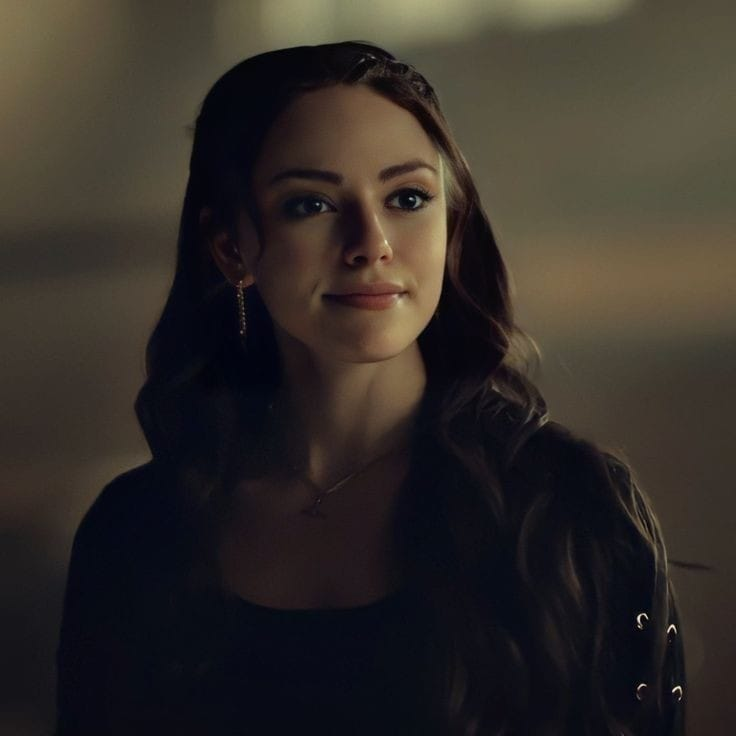

<html>
    <html lang="en">
        <head>
            <meta charset="utf-8">
            <meta name="viewport" content="width=device-width, initial-scale=1.0">
            <title>TD</title>
        </head>
</html>
<style>
    body{
        background-color: rgb(1, 3, 29);
        font-family: Arial;
        color: antiquewhite;
    }
    .sol_kisim{
        background-color: rgb(9, 3, 54);
        width: 20%;
        padding: 15px;
        text-align: center;
        float:left;
    }
    .sag_kisim{
        width: 75%;
        float: right;
    }
    .menu{
        list-style-type: none;
        margin-bottom: 50px;
        width: 100%;
    }
    .menu li{
        padding: 3px;
        border-bottom: solid 3px white;
        float: left;
        font-display: none;
    }
    .menu li:hover{
        background-color: transparent;
    }
    a{color:white;
    text-decoration: none;}
    .btn{
    width: 13em;
    height: 3em;
    border-radius: 20em;
    font-size:small;
    border: none;
    position: absolute;
    cursor: pointer;
    overflow: hidden;
    z-index: 1;
    box-shadow: 6px 6px 12px #000000, -6px 6px 12px #030101;
    float: center;
    place-items: center;
    right: 33% ;
}
.btn::before{
    content: '';
    width: 0;
    height: 3em;
    border-radius: 30em;
    position: absolute;
    top: 0;
    left: 0;
    background-image: linear-gradient(to right, #ffffff 0%, #ffffff 100%);
    transition: .5s ease;
    display: block;
    z-index: -1;
}
.btn:hover::before{
    width: 9em;
}
</style>
</head>
<body>
    <div class="sol_kisim">
        
        <br>The Vampire Diaries<br>
        <ul class="menu">
            <li><a href="karakterlerlgcs.html">Karakterler</a></li><br><br>
            <li><a href="oyuncularlgcs.html">Oyuncular</a></li><br><br>
            <li><a href="galerilgcs.html">Galeri</a></li><br><br>
            <li><a href="videolarlgcs.html">Videolar</a></li><br><br>
            <li><a href="giris.html">Giriş</a></li><br><br>
        </ul>
        19.12.2024 tarihinde açıldı. <br><br>
        Tuğçe Dinçer
</div>
<div class="sag_kisim">
    
    <h1>Tanıtım</h1>
    <h4>Legacies, The Vampire Diaries ve The Originals’ın mirasını devam ettiren bir spin-off dizisidir. 2018 yılında başlayan ve dört sezon boyunca devam eden dizi, doğaüstü varlıkların eğitildiği Salvatore School for the Young and Gifted’de geçen hikayeleri konu alır. Bu dizi, genç doğaüstü bireylerin kendi kimliklerini bulma yolculuğuna odaklanır.</h4>
    <h4>Hikaye, Mystic Falls’ta yer alan Salvatore Okulu’nda geçer. Vampirler, kurt adamlar, cadılar ve diğer doğaüstü varlıklar için bir eğitim merkezi olan okul, öğrencilerin güçlerini kontrol etmeyi ve dünyaya uyum sağlamayı öğrenmelerini amaçlar.</h4>
    <h4>Dizinin başrolü, Klaus Mikaelson ve Hayley Marshall’ın kızı Hope Mikaelson’dır. Hope, bir tribrid olarak (vampir, kurt adam ve cadı güçlerine sahip) doğaüstü dünyada benzersiz bir yere sahiptir. Güçlü, kararlı ve zaman zaman yalnız olan Hope, dizinin ana merkezini oluşturur.</h4>
    <h4>Legacies, doğaüstü temalarının yanı sıra dostluk, aidiyet ve bağ kurma temalarını işler. Hope’un Landon Kirby, Josie Saltzman ve Lizzie Saltzman gibi arkadaşlarıyla olan ilişkileri, dizinin hikayesini derinleştiren önemli unsurlardır. Bu karakterler arasındaki dinamikler, gençlik dramını güçlü bir şekilde yansıtır.</h4>
    <h4>Josie ve Lizzie Saltzman, Alaric Saltzman’ın ikiz kızları ve Salvatore Okulu’nun önemli öğrencileridir. Josie’nin nazik ve düşünceli doğası ile Lizzie’nin enerjik ve bazen patlayıcı kişiliği, dizide unutulmaz bir kardeşlik bağı oluşturur. İkizlerin büyü yetenekleri ve birbirlerine olan bağlılıkları, hikayeye ayrı bir katman ekler.</h4>
    <h4>Legacies, her bölümde farklı bir doğaüstü tehditle karşı karşıya kalır. Ejderhalar, gargoylelar, kara peri masalları ve diğer mitolojik varlıklar, Salvatore Okulu öğrencilerini sürekli olarak sınar.</h3>
    <h4>Alaric Saltzman, Salvatore Okulu’nun müdürü ve rehberidir. Alaric, hem öğrencilerinin hem de kızlarının güvenliğini sağlamak için sürekli mücadele eder. </h3>
    <h4>Legacies, sadece doğaüstü güçleri değil, aynı zamanda gençlerin kendilerini keşfetme süreçlerini de işler. Her karakter, güçlerini ve sınırlarını anlamaya çalışırken, kim olduklarını ve nereye ait olduklarını sorgular.</h3>
    <a href="karakterlerlgcs.html"></a>
    <a href="karakterlerlgcs.html"></a>
    <a href="karakterlerlgcs.html"></a><br><br>
    <a href="karakterlerlgcs.html"><button class="btn">Daha fazla karakter için!</button><br><hr/>
</div>
</body>
</html>